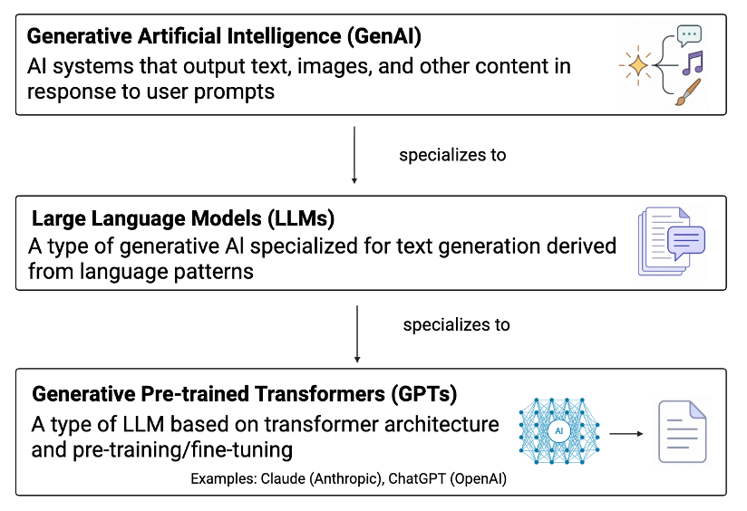
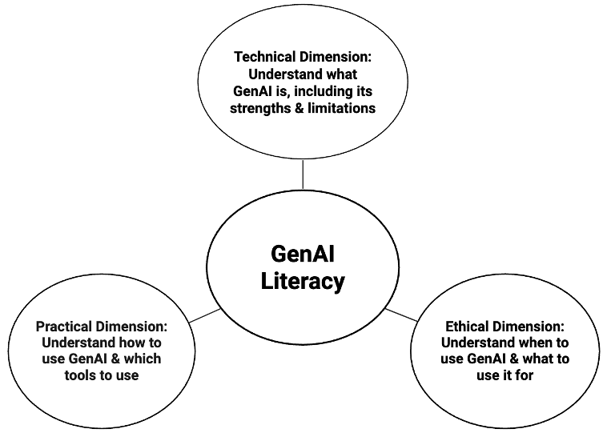
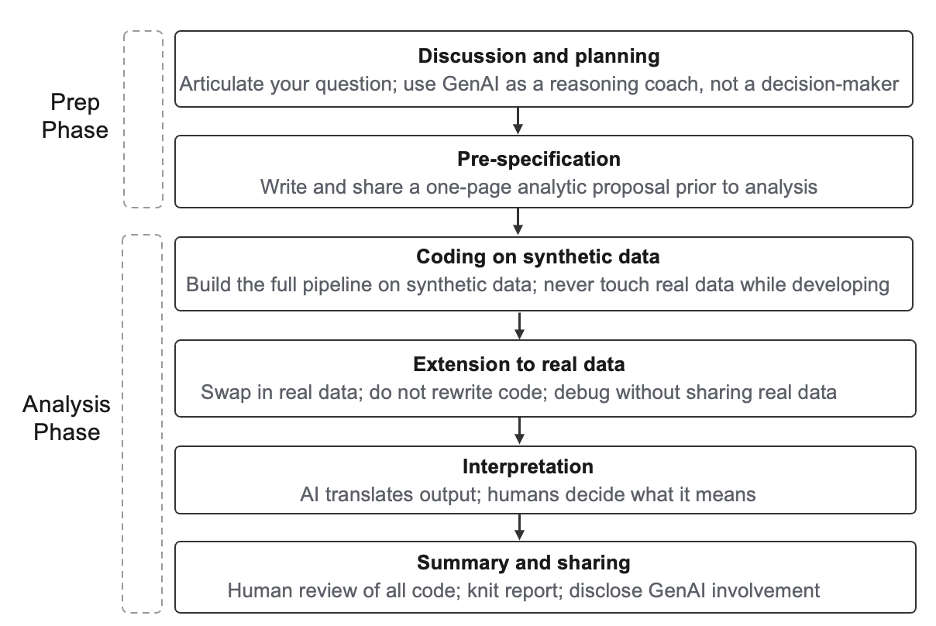
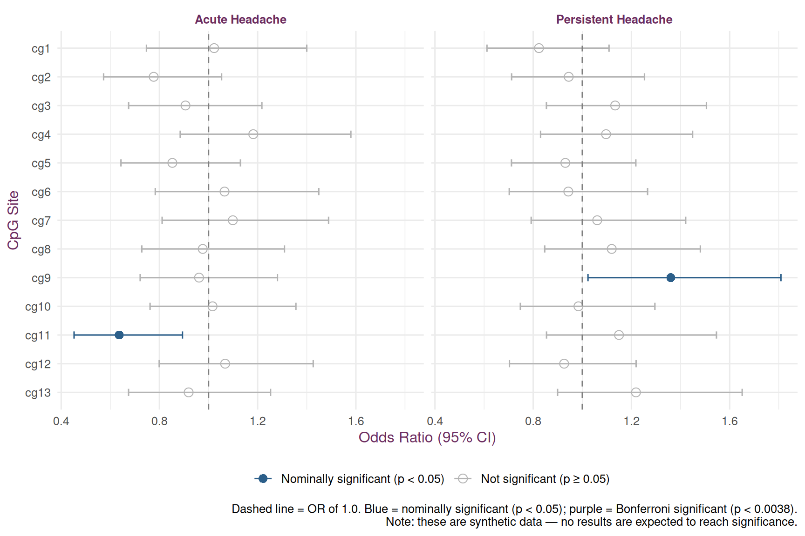

Gina M. Gehling, PhD, RN & Lacey W. Heinsberg, PhD, RN
Copyright
Copyright 2026, University of Pittsburgh. All Rights Reserved. License: GPL-2 (link)
Overview
Generative AI (GenAI) tools (e.g., Claude, Gemini) are systems capable of generating text, code, and other content in response to user prompts (Figure 1).

:::
Caution
⚠ THIS TUTORIAL USES SYNTHETIC DATA. ⚠
Every value generated and analyzed below is randomly simulated and does not represent any real research participant. This document exists solely to demonstrate the structure of the data and the analytical code used in the workflow, so that the pipeline is transparent and reproducible.
Code of Conduct
For nurse scientists operating at the intersection of clinical care and research, using GenAI thoughtfully begins with GenAI literacy—an increasingly essential professional competency. GenAI literacy is defined here as having the knowledge and skills to use GenAI tools effectively, responsibly, and ethically to accomplish tasks. We conceptualize GenAI literacy across three core dimensions: technical, practical, and ethical (Figure 2).

:::
Before beginning, we review an example analytic code of conduct for responsible GenAI collaboration, built around those three dimensions of GenAI literacy (Table 1). These examples are offered not as prescriptive rules but as illustrative examples; individuals are encouraged to adapt them to their own values, research context, and institutional policies.
Table 1. Example analytic code of conduct for GenAI use.
Principle
Description
Build competence before reliance
Prioritize understanding statistical and programming concepts before using GenAI-generated code
Respect data privacy
Do not upload real participant data (use synthetic data during code development)
Maintain objectivity
Critically evaluate GenAI output (check for hallucinations and misapplied methods)
Retain interpretive authority
GenAI can translate statistical output into plain language, but humans determine clinical and scientific significance
Be transparent
Disclose GenAI involvement in code, figures, and manuscripts
Revisit ethics and policy
Frequently revisit GenAI ethics through regular self-reflection as norms evolve rapidly
Important
Core principle: GenAI is a tool, not a decision-maker. Humans retain full interpretive authority over every analytic decision in this workflow.
Application
The principles outlined in Table 1 are exemplified through the following nursing-focused genomic research example.
Scenario
Imagine a research team conducting a study to examine whether DNA methylation (DNAm — a chemical modification to DNA that can influence gene expression without changing the underlying sequence) in the ABC gene is associated with patient-reported headache outcomes following aneurysmal subarachnoid hemorrhage (aSAH), a type of stroke caused by bleeding into the space surrounding the brain.
The study builds on an existing aSAH cohort of 650 patients, with genome-wide DNAm data available for a subset of 200. The outcomes of interest are two patient-reported headache measures:
Acute headache — moderate-to-severe headache reported during hospitalization
Persistent headache — moderate-to-severe headache reported at follow-up
Acute and persistent headache were each coded as binary (0 = absent, 1 = present), with “present” defined as a patient-reported pain score of ≥4 on an 11-point numeric rating scale (0 = no pain, 10 = worst pain imaginable), consistent with a moderate-to-severe threshold. The analytical models examine whether DNAm levels at 13 specific sites in the ABC gene (measured as M-values, a continuous measure of methylation intensity) predict acute and persistent headache status, adjusting for age, sex, and Fisher grade (a clinical measure of stroke severity based on the amount of blood seen on initial brain imaging).
DNAm here reflects peripheral blood methylation, a common and accessible proxy in biobehavioral nursing research, though not a direct measure of central pain pathways. In this example study, the ABC gene and the 13 CpG sites were selected a priori based on prior literature and their location within known regulatory regions. This reflects a candidate-gene approach rather than exploratory design.
The Two-Phase Workflow
The proposed workflow spans two phases. Phase one covers planning and pre-specification; phase two covers code development on synthetic data, extension to real data, interpretation, and final human review and disclosure.

Figure 3. Two-phase workflow for responsible human-AI collaboration in quantitative data analysis.
Phase One: Planning and Pre-Specification
The first phase establishes the analytical foundation before any code is written. The researcher articulates the research question, data structure, planned analytical approach, and known challenges independently. GenAI is then engaged as a reasoning coach, brought in to challenge and refine the researcher’s thinking, not to generate it.
Note
AI Example Prompt 1: Assigning GenAI the role of critical reviewer during planning.
Role: you are a senior biostatistician with expertise in statistical genomics, R programming, and epigenetics.
Task: act as a critical reviewer of the analytical plan described below. Identify weaknesses, potential confounders, and power concerns. List the pros and cons of alternative approaches rather than recommending a single fix. Do not write any code.
Study context: I am designing a study examining whether DNA methylation (DNAm) at 13 CpG sites in the ABC gene predicts patient-reported headache outcomes following aneurysmal subarachnoid hemorrhage (aSAH). I have mapped out an analytical plan, and the purpose of this interaction is to stress test, refine, and improve it before pre-specifying it with my team.
Analytical plan:
Outcomes: acute headache and persistent headache…
Primary predictor: DNAm M-value…
Covariates: age (continuous)…
Model: binary logistic regression…
Multiple testing: Bonferroni correction applied
Sample: N=650 total; n=200 with DNAm data available
Tip
AI Response (illustrative): A few things worth stress-testing: (1) with n=200 for the DNAm subset, statistical power to detect small methylation effects after Bonferroni correction across 26 tests may be limited — consider reporting effect sizes and confidence intervals alongside p-values, not p-values alone; (2) Fisher grade and age may be correlated with both DNAm patterns and headache severity — confirm this isn’t masking or inflating the DNAm association; (3) an alternative to per-site Bonferroni correction would be a false discovery rate (FDR) approach, which is less conservative and common in epigenome-wide analyses — worth discussing with your biostatistician which is more defensible for your design.
Thank you — helpful points. On the power concern: we unfortunately do not have the ability to increase n at this stage, so will proceed with n=200 and plan to report effect sizes and CIs throughout. On the multiple testing question: I discussed FDR vs. Bonferroni with our biostatistician and we decided to use Bonferroni given the candidate-gene design and small number of tests. Can you help me think through whether there are any additional covariates I should consider beyond age, sex, and Fisher grade?
Tip
AI Response (illustrative): Given the aSAH context, a few additional covariates worth considering: (1) time from aSAH onset to DNAm sample collection, since methylation patterns can shift acutely after neurological injury; (2) medication use at time of sampling, particularly corticosteroids or antiepileptics, which are known to influence DNA methylation; (3) Glasgow Outcome Scale score or clinical severity at discharge, which may confound both headache outcomes and DNAm patterns. Whether to include these depends on availability in your dataset and your pre-specified model — worth flagging in your analytic proposal even if you decide not to adjust for them.
(The conversation continues.)
As shown here, any GenAI-generated suggestions should be critically evaluated by the researcher, including checking for hallucinations (plausible-sounding but incorrect information) and cross-referencing against trusted external sources such as biostatisticians and published literature. GenAI supplements, but does not replace, expert consultation.
Once the analytical plan has been refined, it should be written down as a concise pre-specified analytic proposal and shared with the full research team for review and approval before any code runs.
Phase Two: Execution, Translation, and Disclosure
Build the Synthetic Dataset
A foundational principle of this workflow is the synthetic-data-first approach: the full analytical workflow is built and tested using privacy-safe simulated data before any real participant data are introduced. At no point is real participant data — including individual rows, values, or screenshots — shared with GenAI platforms.
Note
AI Example Prompt 2: Synthetic data generation.
Role: you are an experienced R programmer and biostatistician specializing in epigenetic data workflows.
Task: create an RMarkdown file with annotated code to a generate synthetic dataset matching the structure described below. The purpose of this synthetic dataset is to serve as a privacy-safe substitute for real participant data during analytical code development. Provide inline comments explaining each step and the reasoning behind key distributional choices. Ask me questions if I have missed something that you need in the prompt below.
Dataset structure:
Full sample of N=650, with a subset of n=200 having DNAm data available (indicated by a variable called has_dnam)
CpG M-values: generate cg1-cg13 only for has_dnam=TRUE participants, drawn from a uniform distribution ranging from -2 to 2; all others should have NA
Covariates: age (normal distribution, mean=55, SD=10); sex (Male/Female, with Female accounting for 70% of the sample, consistent with the aSAH literature); fisher_grade (categories 2, 3, 4 with probabilities 0.3, 0.4, 0.3)
Additional variables: ID (sequential integer, 1-650); has_dnam (logical)
Variable names and types: ID (sequential integer, 1-650), age (numeric), sex (character: “male”/”female”), fisher_grade (integer: 2, 3, or 4), acute_headache (binary: 0/1 where 1=yes), persistent_headache (binary: 0/1 where 1=yes), has_dnam (logical: TRUE/FALSE), cg1-cg13 (numeric).
Apply a fixed seed (set.seed(123)) to promote reproducibility.
Note the level of detail in this prompt: every variable, distribution, and parameter is explicitly defined. These specification decisions are best made collaboratively with a biostatistician or research team before writing the prompt, mirroring the pre-specification process from Phase One. GenAI executes decisions the team has already made; it does not make them.
Tip
AI Response (illustrative): Here’s R code that builds the cohort in two stages — first the full N=650 sample with covariates and outcomes, then the 200-person DNAm subset with CpG M-values — so the has_dnam flag correctly reflects which rows carry methylation data.
set.seed(123) # ensures reproducibility
N <- 650 # full cohort sizen_dnam <- 200 # subset with DNAm data available
# --- Step 2: Flag which participants have DNAm data (n = 200 subset) ---
[Etc, etc.]
Pasting in the GenAI output into our R markdown we can then easily produce a fully synthetic dataset!
Code
set.seed(123) # ensures reproducibilityN <-650# full cohort sizen_dnam <-200# subset with DNAm data available# --- Step 1: Generate baseline cohort (N = 650) ---df <-data.frame(ID =1:N,age =round(rnorm(N, mean =55, sd =10), 0),sex =sample(c("male", "female"), N, replace =TRUE, prob =c(0.3, 0.7)),fisher_grade =sample(c(2, 3, 4), N, replace =TRUE, prob =c(0.3, 0.4, 0.3)),acute_headache =rbinom(N, 1, 0.25),persistent_headache =rbinom(N, 1, 0.30))# --- Step 2: Flag which participants have DNAm data (n = 200 subset) ---dnam_ids <-sample(df$ID, n_dnam)df$has_dnam <- df$ID %in% dnam_ids# --- Step 3: Generate 13 CpG site M-values, DNAm subset only ---# Participants without DNAm data get NA for all cg1-cg13 columnscpg_names <-paste0("cg", 1:13)for (cpg in cpg_names) { df[[cpg]] <-NA_real_ df[[cpg]][df$has_dnam] <-runif(sum(df$has_dnam), min =-2, max =2)}# Preview the structurestr(df[, c("ID", "age", "sex", "fisher_grade", "acute_headache","persistent_headache", "has_dnam", "cg1", "cg2")])
'data.frame': 650 obs. of 9 variables:
$ ID : int 1 2 3 4 5 6 7 8 9 10 ...
$ age : num 49 53 71 56 56 72 60 42 48 51 ...
$ sex : chr "female" "female" "female" "male" ...
$ fisher_grade : num 3 2 3 3 4 4 3 2 4 3 ...
$ acute_headache : int 0 0 0 1 0 0 0 0 0 0 ...
$ persistent_headache: int 0 0 0 0 1 0 0 1 1 0 ...
$ has_dnam : logi TRUE FALSE FALSE FALSE TRUE FALSE ...
$ cg1 : num -0.223 NA NA NA 1.351 ...
$ cg2 : num 1.245 NA NA NA 0.795 ...
Code
head(df)
ID age sex fisher_grade acute_headache persistent_headache has_dnam
1 1 49 female 3 0 0 TRUE
2 2 53 female 2 0 0 FALSE
3 3 71 female 3 0 0 FALSE
4 4 56 male 3 1 0 FALSE
5 5 56 male 4 0 1 TRUE
6 6 72 female 4 0 0 FALSE
cg1 cg2 cg3 cg4 cg5 cg6 cg7
1 -0.2234922 1.2449797 0.6383710 -0.6388782 -0.8132949 1.24518 -0.02442685
2 NA NA NA NA NA NA NA
3 NA NA NA NA NA NA NA
4 NA NA NA NA NA NA NA
5 1.3511896 0.7947385 0.9384728 -1.9266363 0.1682752 1.46697 -1.98117499
6 NA NA NA NA NA NA NA
cg8 cg9 cg10 cg11 cg12 cg13
1 1.883021 0.4790729 -1.028751 -1.5615095 1.673320 -0.3613391
2 NA NA NA NA NA NA
3 NA NA NA NA NA NA
4 NA NA NA NA NA NA
5 1.170122 0.2609439 1.377999 0.5259716 -1.465267 1.5419934
6 NA NA NA NA NA NA
Note that CpG M-values here were simulated from a uniform distribution (-2 to 2) purely to support pipeline development and testing, and does not reflect the bimodal distribution typically observed in real methylation data (M-values usually cluster near the extremes, reflecting hypo- and hyper-methylated CpG sites). This simplification was a deliberate choice for this synthetic-data stage; it should be revisited and validated against the true DNAm distribution once real data are available, before any inferential results are reported.
Explore the Synthetic Data
Before modeling, confirm the simulated data matches the intended structure — this check is done by the human, not delegated to GenAI.
Code
# Confirm cohort sizestable(df$has_dnam)
FALSE TRUE
450 200
Code
# Distribution of covariatessummary(df$age)
Min. 1st Qu. Median Mean 3rd Qu. Max.
27.00 49.00 55.00 55.06 62.00 87.00
Code
table(df$sex)
female male
453 197
Code
table(df$fisher_grade)
2 3 4
190 266 194
Code
# Outcome prevalencemean(df$acute_headache)
[1] 0.2523077
Code
mean(df$persistent_headache)
[1] 0.3015385
Fit the Analytic Model
Throughout code development, GenAI can be used for targeted tasks — drafting initial code, debugging error messages, refining and annotating existing code — with specific, bounded requests rather than open-ended rewrites. One of the most powerful applications of this targeted approach is using GenAI to build a reusable function — a task that is technically well-defined, involves no participant data, and produces efficient, reproducible code that can be applied across multiple models.
Note
AI Example Prompt 3: Assigning GenAI the role of code developer for the primary regression analysis.
Role: you are an experienced R programmer and biostatistician specializing in epigenetic data workflows.
Task: using the synthetic dataset generated in our previous exchange, write annotated R code to run the primary regression analyses described below. Build the code in small, testable chunks and include inline comments explaining each step. Do not modify the dataset or introduce new variables.
Analysis specifications:
Run binary logistic regression models for each of 13 CpG sites (cg1–cg13) × 2 outcomes (acute_headache, persistent_headache) = 26 models total; implement this as a reusable R function rather than a loop, to promote code efficiency and reusability
Model formula for each: outcome ~ CpG_Mvalue + age + sex + fisher_grade, using the DNAm subset only (has_dnam=TRUE)
For each model, extract the following for the DNAm term only: odds ratio (exponentiated coefficient), 95% confidence interval (exponentiated), and p-value
Apply Bonferroni correction across the 13 tests within each outcome (corrected significance threshold = 0.05/13 ≈ 0.0038)
Organize all results into a single clean summary table with columns: CpG site, outcome, odds ratio, lower 95% CI, upper 95% CI, p-value, Bonferroni-corrected significance (yes/no); write that file as an excel document
Output: the final summary table should be print-ready and suitable for inclusion in a manuscript.
Tip
AI Response (illustrative): Here is a reusable function run_cpg_model() that fits one logistic regression model given a CpG site name and outcome name, extracts the DNAm term, and returns a tidy results row. Wrapping the logic in a function keeps the code modular and easy to debug one model at a time before scaling to all 26.
Good coding practice is to write a little, run it, check the output, then build from there. The code below first fits a single representative model (cg1 → acute headache) to confirm everything works as intended, then scales up using a reusable function across all 13 CpG sites and both outcomes.
Code
# Restrict to the DNAm subset for all modelsdf_dnam <-subset(df, has_dnam)# Step 1: Fit one model first to confirm the code works before scaling up# Logistic regression: acute headache ~ DNAm M-value (cg1) + covariatesmodel_acute_cg1 <-glm( acute_headache ~ cg1 + age + sex + fisher_grade,data = df_dnam,family = binomial)summary(model_acute_cg1)
Call:
glm(formula = acute_headache ~ cg1 + age + sex + fisher_grade,
family = binomial, data = df_dnam)
Coefficients:
Estimate Std. Error z value Pr(>|z|)
(Intercept) -1.54076 1.17397 -1.312 0.1894
cg1 0.02258 0.16015 0.141 0.8879
age -0.02492 0.01767 -1.410 0.1585
sexmale 0.64484 0.35040 1.840 0.0657 .
fisher_grade 0.47633 0.22585 2.109 0.0349 *
---
Signif. codes: 0 '***' 0.001 '**' 0.01 '*' 0.05 '.' 0.1 ' ' 1
(Dispersion parameter for binomial family taken to be 1)
Null deviance: 220.43 on 199 degrees of freedom
Residual deviance: 211.30 on 195 degrees of freedom
AIC: 221.3
Number of Fisher Scoring iterations: 4
Code
# Step 2: Build a reusable function to run one model and extract results# This is more efficient than copy-pasting code 26 timesrun_cpg_model <-function(cpg, outcome, data) {# Build the model formula dynamically formula <-as.formula(paste(outcome, "~", cpg, "+ age + sex + fisher_grade"))# Fit logistic regression mod <-glm(formula, data = data, family = binomial)# Extract results for the DNAm term only coef_table <-summary(mod)$coefficients dnAm_row <- coef_table[cpg, ]# Return a tidy results rowdata.frame(cpg_site = cpg,outcome = outcome,odds_ratio =exp(dnAm_row["Estimate"]),ci_lower =exp(dnAm_row["Estimate"] -1.96* dnAm_row["Std. Error"]),ci_upper =exp(dnAm_row["Estimate"] +1.96* dnAm_row["Std. Error"]),p_value = dnAm_row["Pr(>|z|)"] )}# Step 3: Apply the function across all 13 CpG sites and 2 outcomescpg_sites <-paste0("cg", 1:13)outcomes <-c("acute_headache", "persistent_headache")# Run all 26 models and combine results into a single tableresults <-do.call(rbind, lapply(outcomes, function(outcome) {do.call(rbind, lapply(cpg_sites, function(cpg) {run_cpg_model(cpg, outcome, df_dnam) }))}))# Step 4: Apply Bonferroni correction within each outcome (0.05/13 ≈ 0.0038)results$bonferroni_significant <- results$p_value < (0.05/13)# View resultshead(results)
(The full results table, including all 26 models, is generated by applying the function across all CpG sites and outcomes as shown above.)
GenAI can also help us enhance communication by helping draft publication-quality figures. For example, the forest plot below was generated using code developed with GenAI assistance.
Note
AI Example Prompt (bonus): Assigning GenAI the role of figure developer.
Role: you are an experienced R programmer and biostatistician specializing in epigenetic data workflows.
Task: using the results object generated in our previous exchange, write annotated R code to create a forest plot displaying the odds ratios and 95% confidence intervals for the DNAm predictor across all 26 models. The plot should:
Display one row per model (CpG site × outcome combination)
Facet by outcome (acute_headache vs. persistent_headache)
Include a vertical reference line at OR = 1.0
Use three levels of visual emphasis based on significance: gray open circles for non-significant results (p ≥ 0.05), blue filled circles for nominally significant results (p < 0.05), and purple filled circles for Bonferroni-significant results (p < 0.0038); include a legend
Use clean, publication-ready formatting with minimal theme
Tip
AI Response (illustrative): Here is ggplot2 code that facets by outcome and uses three levels of visual emphasis: gray open circles for non-significant results, blue filled circles for nominally significant results, and purple filled circles for Bonferroni-significant results.
Code
library(ggplot2)results_plot <- resultsresults_plot$cpg_site <-factor(results_plot$cpg_site,levels =paste0("cg", 13:1))results_plot$outcome_label <-ifelse(results_plot$outcome =="acute_headache","Acute Headache","Persistent Headache")# Flag nominal significance (p < 0.05) separately from Bonferroniresults_plot$significance <-ifelse(results_plot$bonferroni_significant, "Bonferroni significant (p < 0.0038)",ifelse(results_plot$p_value <0.05,"Nominally significant (p < 0.05)","Not significant (p ≥ 0.05)"))ggplot(results_plot, aes(x = odds_ratio, y = cpg_site,color = significance,shape = significance)) +geom_point(size =3) +geom_errorbarh(aes(xmin = ci_lower, xmax = ci_upper), height =0.25) +geom_vline(xintercept =1, linetype ="dashed", color ="gray50") +facet_wrap(~ outcome_label) +scale_color_manual(values =c("Not significant (p ≥ 0.05)"="gray70","Nominally significant (p < 0.05)"="#2c5f8a","Bonferroni significant (p < 0.0038)"="#6B2C5F"),name ="") +scale_shape_manual(values =c("Not significant (p ≥ 0.05)"=1,"Nominally significant (p < 0.05)"=16,"Bonferroni significant (p < 0.0038)"=16),name ="") +labs(x ="Odds Ratio (95% CI)",y ="CpG Site",caption ="Dashed line = OR of 1.0. Blue = nominally significant (p < 0.05); purple = Bonferroni significant (p < 0.0038).\nNote: these are synthetic data — no results are expected to reach significance.") +theme_minimal(base_size =12) +theme(legend.position ="bottom",strip.text =element_text(face ="bold", color ="#6B2C5F"),axis.title =element_text(color ="#6B2C5F"))

Important
Key takeaway: Real participant data were never shared with GenAI. The function was built and validated entirely on synthetic data. When the real dataset is swapped in, this code runs without modification because it was written for a data structure, not a specific file.
Extend to Real Data
Once the pipeline has been built and validated on synthetic data, it can be extended to the real data by simply swapping the synthetic data import for the real one — no other changes to the code are needed. Because the synthetic and real datasets share identical structure, the code runs without modification in most cases. When issues arise, GenAI can assist with debugging by sharing error messages and relevant code, but never real data.
(This step is illustrative only in this tutorial, since no real dataset is used here.)
Interpret Results
Under the guiding principles in Table 1, GenAI is used to translate statistical output into plain language, but the researcher retains full interpretive authority. GenAI functions as a translator of numbers into words — it should not be used to determine clinical or scientific significance. That judgment belongs to the researcher, who brings domain expertise, knowledge of the study population, and understanding of the broader literature that no GenAI tool can replicate.
Note
AI Example Prompt 4: Assigning GenAI the role of statistical translator.
Role: you are a senior biostatistician with expertise in statistical genomics, R programming, and epigenetics.
Task: translate the statistical results below into plain language including what the odds ratios, confidence intervals, and p-values mean in the context of this specific model, including the direction and magnitude of the association and what the reference category is.
Boundary: do not comment on clinical meaning, significance for patient care, or implications for nursing practice; that interpretation belongs to the research team. Limit your response to what the numbers mean statistically.
[paste model output]
Call:
glm(formula = acute_headache ~ cg1 + age + sex + fisher_grade,
family = binomial, data = df_dnam)
Coefficients:
Estimate Std. Error z value Pr(>|z|)
(Intercept) -1.54076 1.17397 -1.312 0.1894
cg1 0.02258 0.16015 0.141 0.8879
age -0.02492 0.01767 -1.410 0.1585
sexmale 0.64484 0.35040 1.840 0.0657 .
fisher_grade 0.47633 0.22585 2.109 0.0349 *
---
Signif. codes: 0 '***' 0.001 '**' 0.01 '*' 0.05 '.' 0.1 ' ' 1
(Dispersion parameter for binomial family taken to be 1)
Null deviance: 220.43 on 199 degrees of freedom
Residual deviance: 211.30 on 195 degrees of freedom
AIC: 221.3
Number of Fisher Scoring iterations: 4
Tip
AI Response (illustrative): For cg1, the log-odds coefficient is 0.023, which converts to an odds ratio of approximately 1.02 (95% CI: approximately 0.75–1.40). This indicates that for each one-unit increase in DNAm M-value at cg1, the estimated odds of acute headache increase by about 2%, holding all other variables constant. The p-value is 0.89, which is far above any conventional significance threshold. The reference category for sex is ‘female’ — the sexmale coefficient (0.64, p=0.066) represents the difference in log-odds for males relative to females, converting to an odds ratio of approximately 1.91. Fisher grade has a positive coefficient (0.48, p=0.035), converting to an odds ratio of approximately 1.61 per one-unit increase in grade. Age shows a small negative coefficient (-0.025, p=0.16), converting to an odds ratio of approximately 0.98 per one-year increase.
Important
Retain interpretive authority: this prompt illustrates the ‘retain interpretive authority’ principle in action. GenAI translates the numbers into words — the researcher decides what those words mean for patients, populations, and nursing practice. For researchers at any career stage, making this boundary explicit in the prompt itself is better than leaving it implicit.
Human Review and Disclosure
The workflow closes with human review and transparent disclosure. A clean, reproducible report is generated from the scripted workflow, and all code is reviewed line by line by a human. Consistent with the transparency principle outlined in Table 1, GenAI involvement should be disclosed in all research products, including the specific tool used and the nature of its contributions.
Generative AI Disclosure
This tutorial was developed by the authors, with generative AI (Claude, Anthropic) used throughout the preparation of this document, including drafting of the synthetic dataset code, R code annotations, and structuring of the tutorial narrative. All scientific content, analytic decisions, and code were reviewed and approved by the authors, who take full responsibility for the accuracy and integrity of this work.